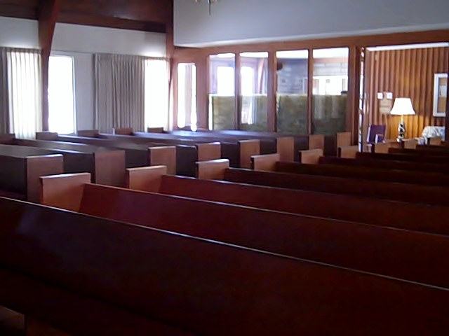
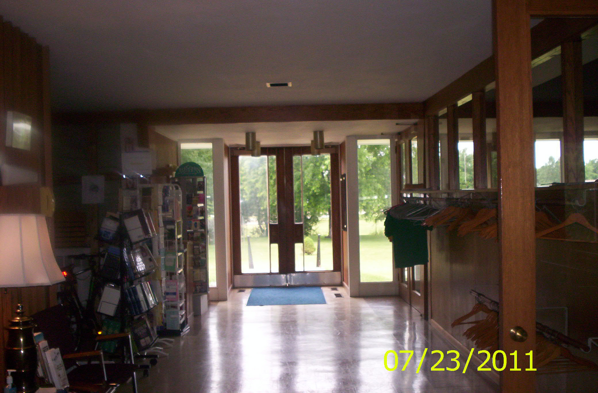

Grace Bible Church of Streamwood

Spend Sunday Celebrating With Family!
Yes! Every single Sunday is a celebration of the family at our church
One of the most difficult tasks that parents undertake in our society is rearing children. There are so many things that demands our time and energy in this fast-paced generation that we are constantly juggling our priorities in an effort do what is best for our own family.
Attend Where Family Values Are Taught Every Sunday!
Every Sunday the truths of the Bible are taught to all ages throughout our church services. It is our hope and prayer that you and your family might know the joy of personal relationship with Jesus Christ, God's Son, and the blessing of worshipping together as a family each Sunday.

Pastor Jerry's Ministry Vision
It is a vision of a church which can love and care for people who are struggling, emotionally and with fear, anger, insecurity, depression, addictions, etc. and find hope, security, forgiveness, acceptance, and the encouragement in Christ. It is a vision of a congregation building loving relationships with unbelievers, and sharing the good news of Jesus Christ with hundreds or even thousands of residents in the Northwest suburbs of Chicago, beginning with Streamwood. It is a vision of building up hundreds of Christians to Spiritual and emotional maturity through Christian Life Training Classes. These classes will recongnize the hurdles and obstacles every Christian must overcome in their walk with the Lord. The teaching will use the means of small groups, Bible studies, seminars, retreats, and classes for our members to promote learning, fellowhsip, encouragement, and love toward one another. It is a vision of equipping every believer for a significant ministry by helping them discover their spiritual gifts and how their gifts can be used in the church. It is a vision of unleashing hundreds of mature, mission-minded believers into the ministry of Jesus Christ all over the world and raising the needed finances to send them. It is a vision of reaching out to the poor in our community in love, with a team of service-mined believers dedicated to meeting the needs for food, clothing, shelter, fuel for their cars or homes, jobs, and financial counseling, to help people become contributors to society and the LORD. It is a vision of starting a new church every time our attendance reaches 600, by transplanting 200 of our people in an adjacent area, for the purpose of reaching more people for Christ and to multiply our ministry for the Lord all over the Chicago area and other parts of the world. It is a vision of expanding our building to accommodate the needs of our ministry with a beautiful facility including a worship center seating 700, a counseling and prayer center, classrooms for Bible studies and Christian Life Training Classes, and a fellowship hall and gymnasium for our church family activities. In addition, I would love to see a working lighthouse built with a cross on top symbolizing the saving and rescuing function of the church. All these will be designed to minister to the total person - spiritually, emotionally, and physically - and set in a peaceful, inspiring garden landscape. Delight yourself in the LORD and he will give you the desires of your heart. Ps. 37:4(NIV) When our desires and purposes come in line with God's desires and purposes, God blesses our efforts.
Pastor Jerry Meyer

FROM MY HEART TO YOURS - Notes from your Pastor's wife
Hang On!
"Then the Lord told Abram, "Leave your country, your relatives, and your father's house, and go to the land that I will show you. I will cause your to become the father of a great nation. I will bless you and make you famous, and I will make you a blessing to others..So Abram departed as the Lord instructed him." (GENESIS 12:1-4 NLT)
"You're blessed when you stay on course, walking steadily on the road revealed by God. You're blessed when you follow his directions, doing your best to find him. (Psalm 119:1-3 MSG)
First, was the command. Leave the familiar and go to the unknown. God told Abram to leave his country, his relatives, his home, and step out in faith and go to a place that God would show him. God didn't tell him where he was going. He only asked Abram to trust him and go.
Second, was the promise. I will. God told Abram that he would be blessed and would be a blessing. God was asking Abram to believe that he is true to his word.
Third, was obedience. He went. Abram trusted God and went. "It was by faith that Abraham obeyed when God called him to leave home and to go to another land that God wold give him as his inheritance. He went without knowing where he was going." (Hebrews 11:8). Abraham walked by faith and not by sight.
Forth, was a time of testing. Abraham was tested when God's promise of a son wasn't fulfilled within his anticipated time frame. He failed to wait on God's timing. He failed the first test. Even then, God in his graciousness told Abraham that he would still receive his promised son. This time he trusted God and waited. Hist failure to pass the first test prepared him for the hardest test of his life - that of surrendering what he loved most to God. Abraham passed that test.
"It was by faith that Abraham offered Isaac as a sacrifice when God was testing him." (Hebrews 11:17).
Fifth, was a time of reward. Abraham was blessed with the promised son. "It was by faith that Sarah together with Abraham was able to have a child, even though they were too old and Sarah was barren. Abraham believed that God would keep this promise." (Hebrews 11:11). "Then the Lord did exactly what he had promised. Sarah became pregnant, and she gave a son to Abraham in his old age. It all happened at the time God had said it would." Genesis 21:1). Because of Abraham's obedience when tested, God blessed him richly."This is what the Lord says: Because you have obeyed me and have not withheld even your beloved son, I swear by my own self that I will bless you richly"(Genesis 22:16). Abraham did become the father of a great nation. He did become famous. He did become a blessing to others.